Quick Start
LemmaLoom is a macOS application for qualitative and grammar analysis of text. You can use it to code passages in documents and interrogate those codes against the document’s grammar. You can, of course, use LemmaLoom just as a coding tool, or just as a grammar analysis tool as well. The mixing of qualitative and grammar analysis, however, will allow you to ask questions about your documents that might otherwise be more difficult to ask with qualitative data analysis tools that are not grammar-aware.
LemmaLoom includes an example project called “Climate Debate” that you can import to explore the different tools and features available in the application. Much of the user guide, and the entirety of this Quick Start chapter, uses the “Climate Debate” project as a contextual theme for examples and explanations. The “Climate Debate” project is composed of fictional op-eds, columns, a speech, and other media, such as a report and a recorded radio debate. Any resemblance to real persons or publications is coincidental, and the content, being fictional, is not representative of any opinions or meant in any way as persuasive material.
In this chapter you build the beginnings of “Climate Debate” from scratch. You begin from eleven invented texts of various kinds (op-eds, a speech, blog posts, and columns). Of these, six are written by climate activists, and five are written by climate skeptics. The figures throughout this guide show the finished project. Follow along with this guide by importing the example project via File ▸ Import ▸ Example Project. When imported, the language of the example project will depend on which interface language you are using in LemmaLoom. This could be English, German, or Mainland Simplified Chinese. Refer to Supported languages in Chapter 1, Introduction. In the example project, the attribute, sets, and codes from the first few steps are already created. Therefore, when working with the example project, skip to Read with a lens. Skip Create codes when you reach it.
In this guide, you may opt to import your own set of texts instead. The details on what kind of files you can import are covered in Chapter 4, Importing Material. Substitute your own materials if desired whenever the instructions mention specific documents, stances, or passages in “Climate Debate”.
The main window
When you first launch LemmaLoom, there will be one window displayed with three columns. You may read all about the interface in A tour of the main window in Chapter 2, Getting Started. Currently, your navigation sidebar on the left is empty, while your inspector tab icons on the right are disabled. Your middle column displays the title LemmaLoom with the buttons New Project and Example Project.
Here it is with a project loaded and a document open:
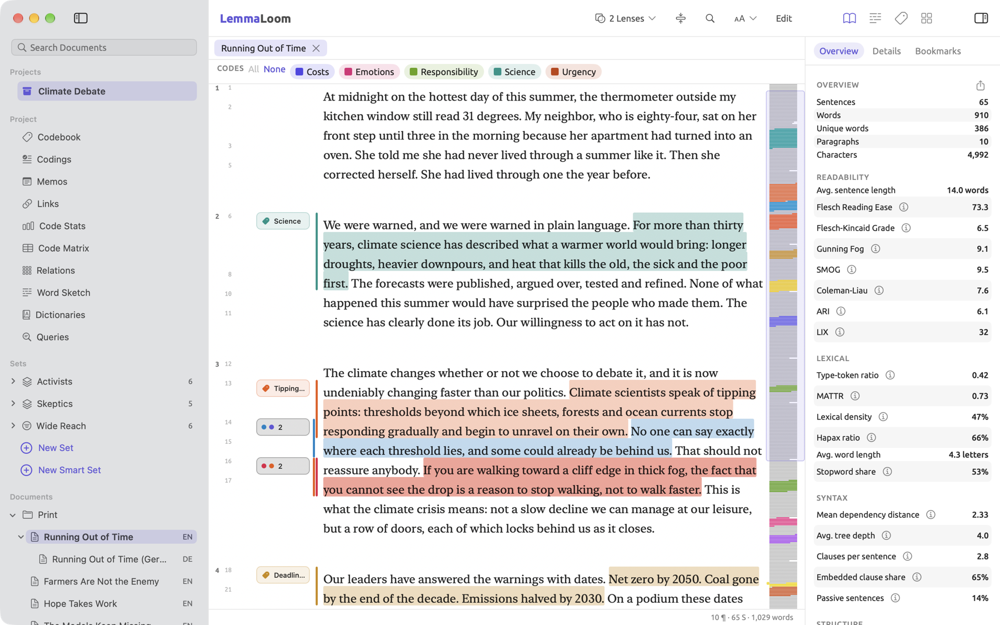
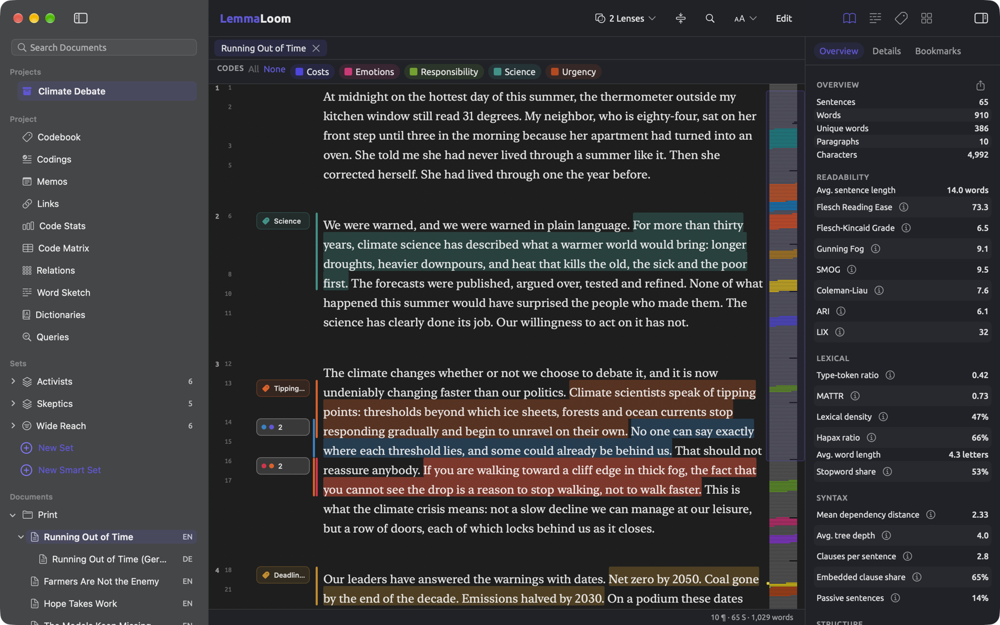
Projects appear in the navigation sidebar on the left. Chapter 3, Projects and Documents describes project structure in more detail. Under Project in the navigation sidebar, you can find ten detail views of the overall project, such as Codebook, Code Matrix, and Queries. Further down in the navigation sidebar come sets, documents, and tags (see Chapter 8, Sets, Groups, Tags, and Attributes). You may search the active project for documents via Edit ▸ Find Document (⇧⌘F); alternatively, you can type the name of a document you are looking for directly into Search Documents at the top of the navigation sidebar.
Documents and detail views are opened in tabs inside the reader in the middle of the window. Across the top of the reader lies the title band containing the lens menu, as well as functions for searching and manipulating text, and for changing how the text and reader look. Chapter 5, Reading and Editing details these various options and functions. The inspector on the right displays information on the document in the active tab. The inspector is divided into four tabs (Text, Grammar, Coding, and Multimode) accessible via buttons at the top right corner of the inspector. Chapter 10, The Text Inspector, Chapter 11, The Grammar Inspector, Chapter 13, Analyzing Codes, and Chapter 14, Sketch Space provide descriptions of what these four tabs display.
A button will be disabled either because it isn’t relevant to the active document or tab, or because it is not available for use yet (lenses require the document’s indexing process to finish first, for example). Hovering the mouse pointer over any disabled button provides the reason for it being disabled, such as Lenses become available when indexing completes.
Create the project
Everything for one study goes into a project. A project is the topmost container in LemmaLoom. It holds the documents and the data you compile as you work on them. That data includes codes, memos, bookmarks, sets, and queries. Generally, you want to keep all relevant material for a study in a single project. LemmaLoom has limited capabilities for cross-project analysis, though queries can be performed across projects. Working across projects in Chapter 3, Projects and Documents explains how such queries work.
Attributes store factual information about your documents. An attribute could be, for example, the stance an author holds, the publishing date, where you found it, etc. You can define attributes when first creating a project or at any other time after. More details about how to work with attributes can be found in Attributes in Chapter 8, Sets, Groups, Tags, and Attributes. For following along in the “Climate Debate” project, all you need is the “Stance” attribute, for comparing activists with skeptics later in this chapter.
- Choose File ▸ New Project (⇧⌘N).
- In Name, type
Climate Debate. - Under Attributes, click Add Attribute.
- In the new row, type
Stancein the name field. - In the menu beside it, choose Picker. A picker accepts only the values you list. That keeps the spelling of each value the same from one document to the next.
- In the field that appears, type
Activist, Skeptic, Neutral. “Neutral” is for documents that report on the debate without taking a side. - Click Create.
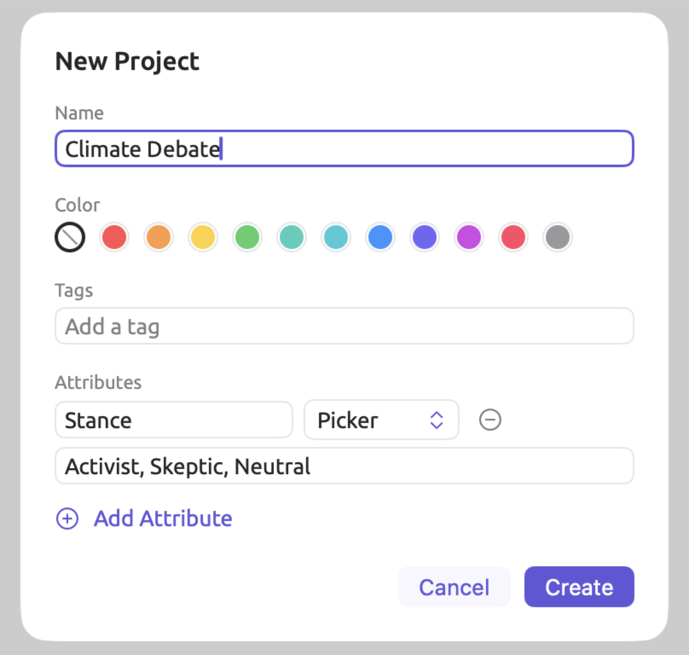
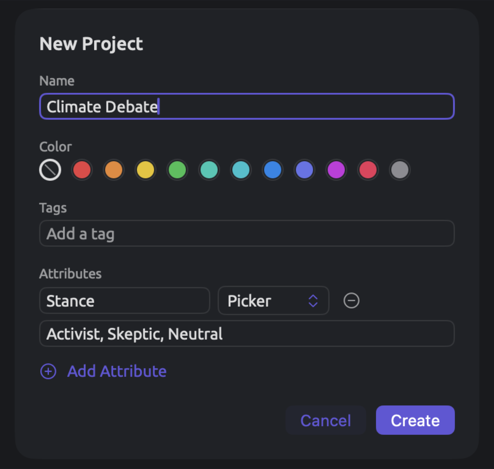
Your new project will appear in Projects in the navigation sidebar with its title in bold face. Titles in bold indicate the active project; everything below the list of projects in the navigation sidebar is only relevant to the active project.
Import the texts
- Choose File ▸ Import ▸ Documents (⇧⌘I).
- Select the eleven texts. To select several files, hold down ⌘ as you click.
- Click Open.
- The Import Document dialog opens for the first file, with 1 of 11 at its top right. Check the Name (LemmaLoom takes it from the file name), and leave the other fields as they are.
- Click Import.
- The dialog opens again for each of the remaining files. Click Import each time, or Skip to leave a file out.
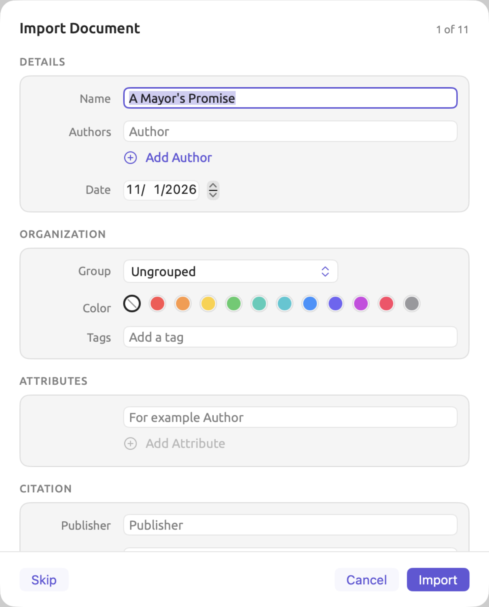
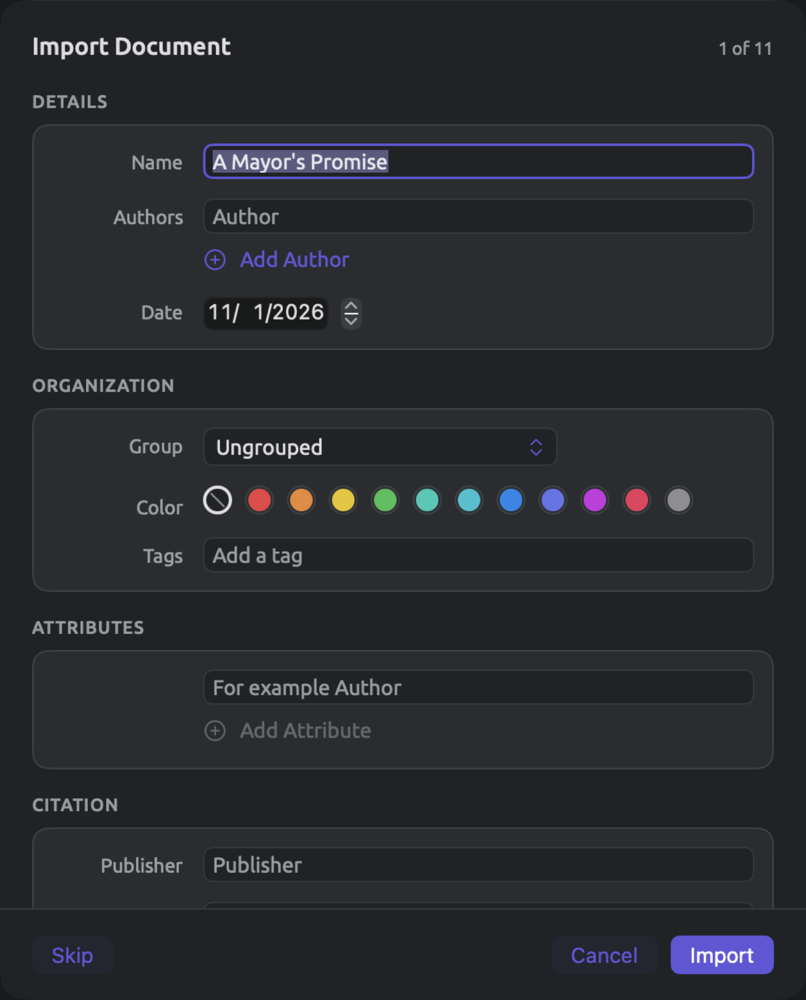
LemmaLoom lists the texts under Documents and starts indexing them in the background. Indexing first splits each text into sentences and words. Then each word gets its dictionary form; this form is called its lemma. It also works which noun is the object of which verb and every other way the words of a sentence depend on one another. Chapter 21, Analysis and Indexing describes indexing in more detail. All documents in “Climate Debate” have been pre-indexed for your convenience. Large documents or media files may take longer to fully index. The hardware capabilities of your computer also play a role in how quickly documents are indexed. LemmaLoom uses hardware acceleration where it is available.
If a document is being indexed, the title will have a gray coloration, along with a small progress ring to the right of it. When the ring disappears, the document has been successfully indexed. If you wish to view all documents currently being indexed, choose Window ▸ Activity (⌥⌘0).
The Import Document dialog allows you to designate dates, groups, tags, and languages for each document, as outlined in The Import Document dialog in Chapter 4, Importing Material. That chapter also explains how to import PDFs, web pages, and audio and video recordings.
Record each text’s stance
“Stance” could also have been specified per-document on the Import Document dialog. With eleven documents, specifying the value using the Attributes window requires significantly less effort than doing it individually. The Attributes window allows setting values in bulk.
- Right-click “Climate Debate” under Projects and choose Attributes, or choose Project ▸ Attributes. The window lists every document in the project.
- Select the checkboxes beside the six activist texts (“Running Out of Time”, “Letter from the Climate Strike”, “Why We Block the Roads”, “Farmers Are Not the Enemy”, “A Mayor’s Promise”, and “Hope Takes Work”).
- The row with Search now shows 6 documents selected. Beside it, choose Set Value ▸ Stance.
- In the Set Value dialog, choose “Activist” and click Apply.
- Deselect the activists’ checkboxes, then select those of the five skeptic texts (“The Models Keep Missing”, “Net Zero Will Cost You”, “Let’s Not Panic”, “Who Pays for the Transition”, and “Science Is Never Settled”).
- Choose Set Value ▸ Stance again, choose “Skeptic”, and click Apply.
- Close the Attributes window.


Alternatively, the active document’s values may be updated using Details on the Text tab in the inspector. This will modify one document at a time. In the Attributes window, performing a search will restrict which rows get affected by the Set Value action. See Setting one value for many documents in Chapter 8, Sets, Groups, Tags, and Attributes for further information.
Make two sets
The keyword list later in this chapter allows you to compare the contents of activist documents versus skeptic documents. This means each party has to have their own set, a collection of documents under a name.
- Under Documents, click “Running Out of Time”, then hold down ⌘ and click each of the other five activist texts.
- Right-click one of the selected documents and choose Add to Set ▸ New Set from Documents.
- The new set appears under Sets with its name ready for editing. Type
Activistsand press Return. - Select the five skeptic texts the same way and make a set called
Skeptics.


“Wide Reach” in the example project contains all documents where “Readership” is greater than or equal to 100,000 people. This set is determined by a rule and is called a smart set. See Smart sets in Chapter 8, Sets, Groups, Tags, and Attributes.
Read with a lens
Clicking “Running Out of Time” in Documents will open it for viewing. The example project has stored it inside the group “Print”. On the left margin of the reader, there are two columns numbering the paragraphs and sentences of your document. Along the right edge of the reader is the document overview, which is a colored scroll bar indicating the current location within your document and its composition in relation to the active lenses (codes, for example). Hovering the mouse pointer over the document overview will also give you a preview of the text at that specific location.
The appearance of content inside the reader is controlled by lenses. Each lens styles text according to a characteristic property of it. More information on this topic is provided in Chapter 6, Lenses, where all available lenses and their annotations are described in depth. When you initially view a document, Codes and Bookmarks lenses are already turned on; hence, the lens menu reads 2 Lenses. Those two lenses draw your existing annotations onto the text. To activate a lens based on grammar analysis, for instance, follow the instructions below:
- Click 2 Lenses in the title band.
- Choose Modality.
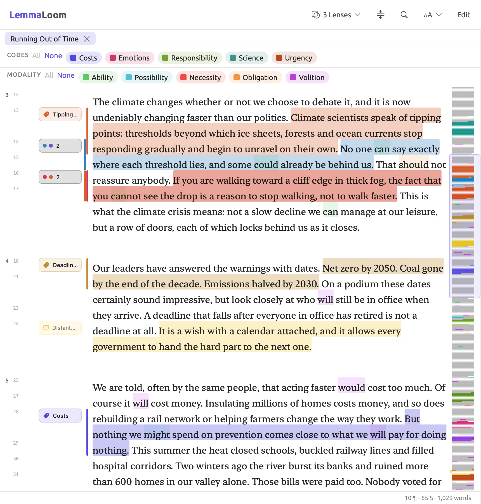
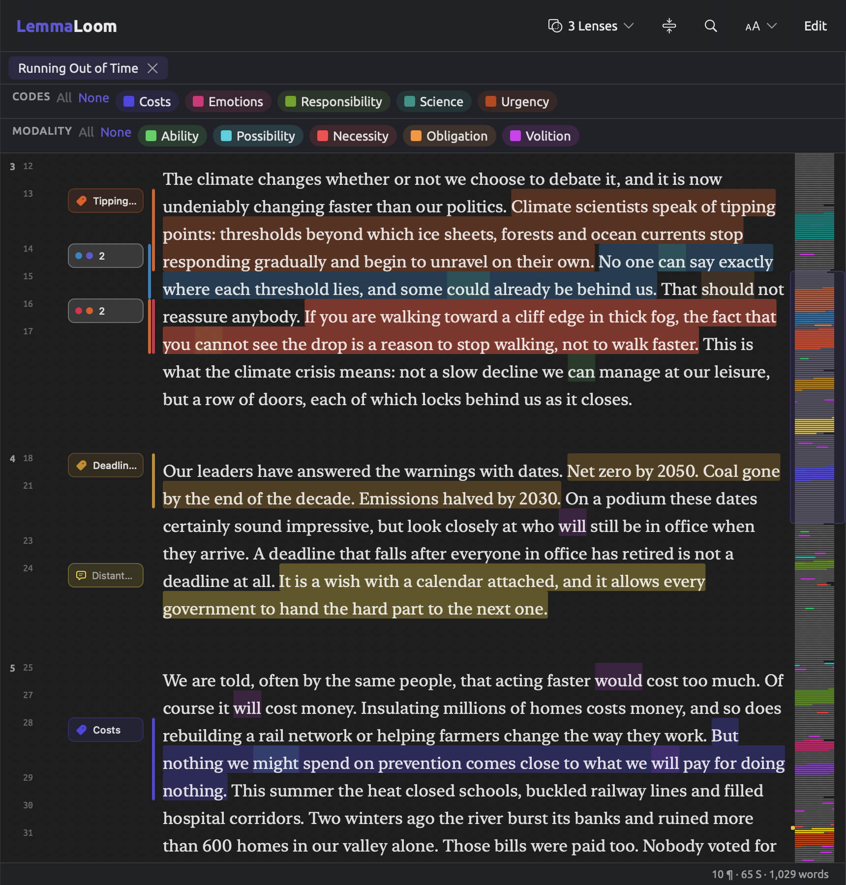
Modality annotates words that talk about ability, necessity, obligation, possibility, and volition. For instance, in “Running Out of Time”, might in “nothing we might spend on prevention” is annotated with Possibility, while can in “No one can say exactly where each threshold lies” is annotated with Ability. Above the text sits a row of colored aspect lenslets that represent the legend of the lens. By clicking any one of the lenslets, you disable the selected aspect and remove its annotations from the document. Another click restores both the aspect and its annotations in the document.
To the right of the lens menu is a button whose tooltip says Show only the sentences a lens annotates. By clicking this button, you shrink the document to show sentences that contain annotations made by active lenses only; click again to expand the document fully.
Create codes
You give passages about some topic or aspect a code that you define yourself (“Urgency”, for example). All of a project’s codes together make up its codebook. You can think of your codebook as a collection of adjectives or ideas you use to describe or highlight details in your project. Your codes can then be used to help you answer questions you might have about the documents in your project. Usually, you will start with some questions you want to ask about your documents, and from there create the codes that you think would help you answer those questions.
The following procedure adds a code called “Urgency” and its subcode, “Deadlines”.
- Under Project in the navigation sidebar, click Codebook. It opens in a tab.
- Click Add Code at the bottom of the code list.
- In the New Code dialog, type
Urgencyin Name. - Under Color, click a color.
- Click Save.
- Right-click “Urgency” in the list and choose Add Subcode.
- In the New Code dialog, type
Deadlinesin Name, choose a color, and click Save.

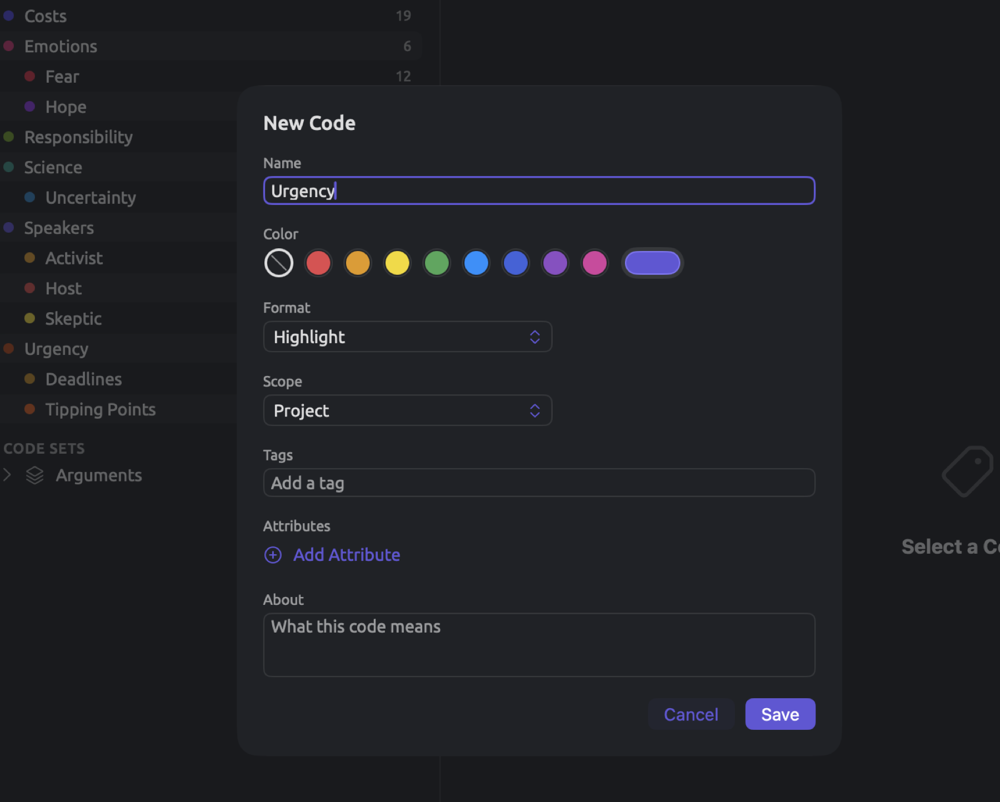
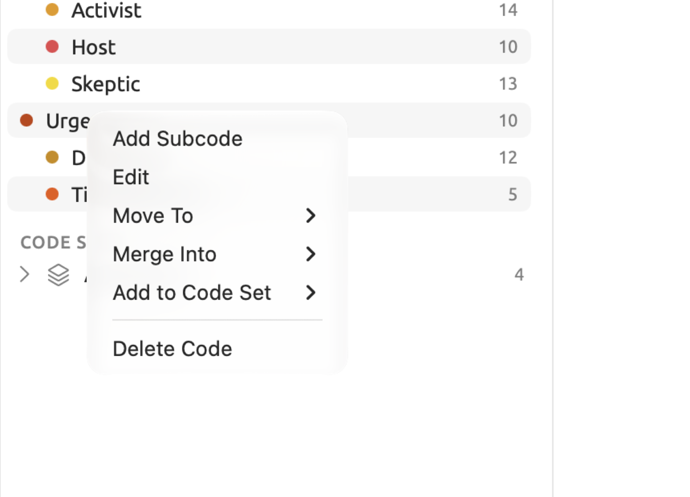
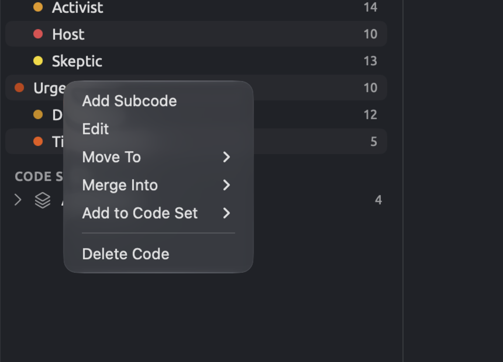
Subcodes enable the creation of hierarchies between related codes. This may be helpful if your study has many similar codes that you want to be logically grouped together.
Code passages
- Click the tab of “Running Out of Time”.
- Select a passage, for example, “A deadline that falls after everyone in office has retired is not a deadline at all.”
- In the bar that appears at the bottom of the reader, click Code.
- In the list of codes, click “Deadlines”.
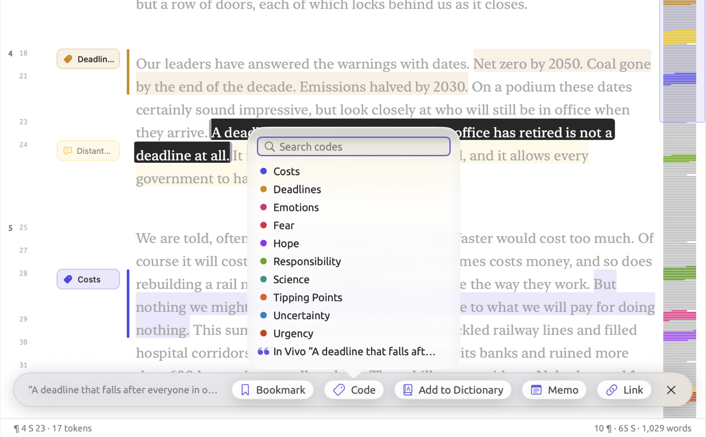
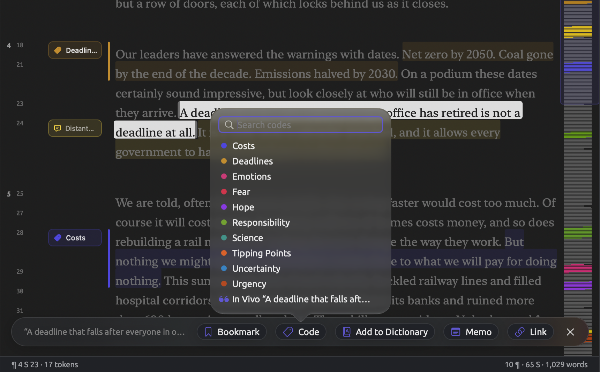
Your passage has been given the color of “Deadlines”. In addition, a bar of the same color appears to the left of the passage. You can still continue browsing the codes available from the list that is currently open, apply a second code to the passage, or hit the Escape key to close the code list. If the codebook contains many codes, you may simply enter the start of a code’s name to locate the one you want. In the event you enter a name no existing code matches, the list provides an option labeled Add Code “…”, which allows you to create and apply the code simultaneously.
Clicking the number adjacent to the paragraph selects everything contained within the paragraph itself without having to manually select the text. Document ▸ Code (⇧⌘C) invokes the very same list of codes. Edit ▸ Undo Apply Code (⌘Z) revokes the most recent application of a code made to any passage. To remove a code later, select the passage again, after which you’ll notice there is a check mark in the list beside codes already assigned; unchecking one removes that code.
You should code a few more passages per text, because the upcoming examples require codings to count and visualize. Coding provides additional context regarding how memos, links, and bookmarks work. That chapter also covers auto code for coding several passages at once.
Compare activists and skeptics
The Code Matrix is in tabular form. It contains columns for every document, and rows for each code you’ve made and used. Each individual cell within the matrix gives the total number of passages carrying its row’s code within its column’s document. Grouping the Code Matrix by an attribute will turn that matrix into a comparison between groups of documents.
- Under Project, click Code Matrix.
- In the menu showing Documents, choose Attribute.
- In the menu that appears beside it, choose “Stance”.
- In the row of buttons below, click Documents.
- In the switch beside it, click %.
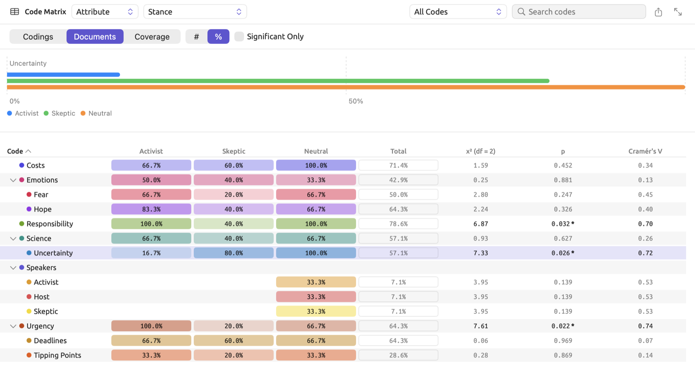
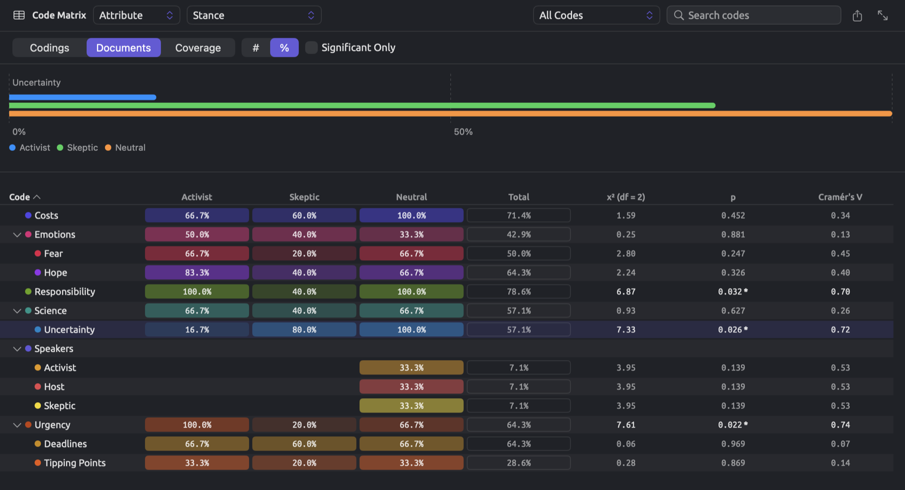
With % chosen, each cell represents the percent of a particular group’s documents where a code occurs at least once in those documents. Selecting a code within the table displays those same values for each group as a bar chart above the table. The “Climate Debate” project has the “Uncertainty” code occur in only one of the six activist texts; thus, the activists’ cell has 16.7%. Of the five skeptic texts, four contain at least one passage with the “Uncertainty” code; hence, the skeptics’ cell has 80.0%. Additionally, note that the table for the “Climate Debate” example project has a “Neutral” column since there are documents representing a neutral stance on climate change included in it. These documents consist of the heat wave report, the news article, and the radio debate.
Codings represents the number of coded passages while Coverage represents the measure in characters of how much of the text is annotated with a code. Whichever metric you choose, the last columns of the table test the groups against each other, with each test assessing whether or not chance alone could explain the difference between the groups in the share of documents containing each code. The current project includes eleven documents divided into two groups, “Activist” and “Skeptic”. With two groups in the comparison, the table tests them against each other using Fisher’s exact test with a reported p-value (p (Fisher)). The “Climate Debate” example project, however, has three groups. Hence, the table applies the chi-square test to test the differences and provides a statistic (χ² (df = 2)) and the associated probability (p).
Consider the case where stance makes absolutely no difference. Then, the p-value for a code indicates the probability of finding the observed difference, or a larger one, purely by chance alone, i.e., without any real differences in stance. When the p-value is less than 0.05, then chance alone produces that difference fewer than once in twenty trials. Accordingly, the results with significance are printed with darker colors and an asterisk (*) next to their corresponding p-values. With the Significant Only option active, the table retains only the codes with significant differences. The strength of these differences is measured using the Cramér’s V metric from 0 to 1 (no difference to maximum difference). Consider the darker test values as justification for reviewing the corresponding passages more carefully.
Code Stats lives directly above Code Matrix within the sidebar. Each row in the table is a unique code you have used; it shows how many passages and documents, and what percentage of total characters, are covered by each code. Chapter 13, Analyzing Codes discusses both views further, with an example of the tests.
Sketch a word
A word sketch demonstrates what other words a particular word combines with grammatically. Those words are classified based on relations. Relation refers to the grammatical connection between the two words. All relations are described in Chapter 12, Word Sketch. The verbs that take a certain word as their object comprise one relation type, for instance. Adjectives describing that word constitute another relation type.
- Under Project, click Word Sketch.
- In the Word field, type
climateand press Return. - If another mode is chosen, click Grammar in the bar at the top of the tab.
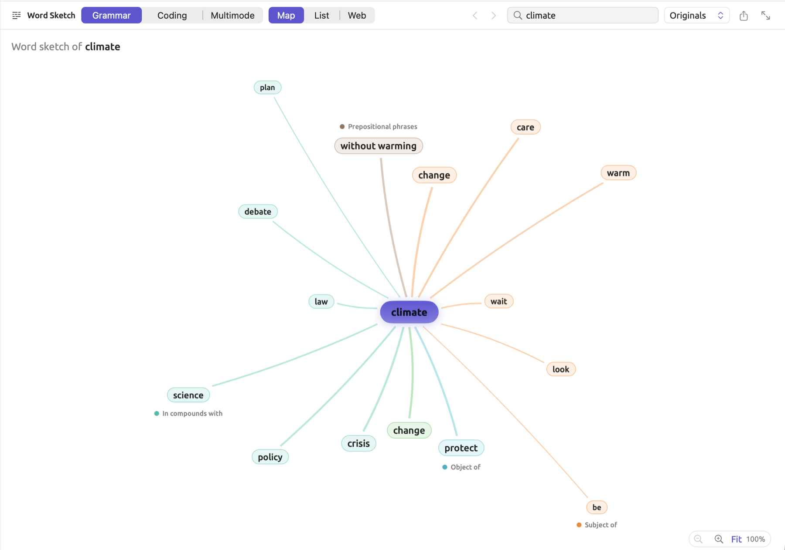
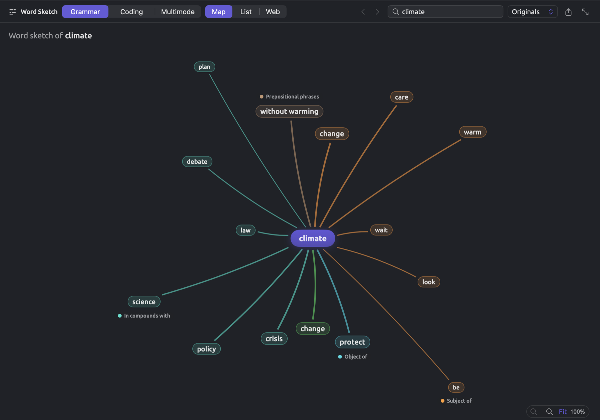
In the map, climate occupies the central position, while its partners are positioned according to their relations. Each color represents one type of relation. Change lies under Subject of because in “the climate is changing”, climate is its subject. Crisis is one of the words listed under In compounds with, as in “the climate crisis”. In a relation, the size of the font representing a partner increases with the strength of the partnership.
The measure used in assessing the strength of the partnerships is known as the logDice score, whose calculations are covered in logDice. The logDice score signifies how much of the two words’ use is accounted for by their occurrences as a pair. Consider the score to be a mathematical expression of collocations. The logDice score ranges up to 14, the maximum for words that co-occur exclusively. Each point below 14 halves that share. Hover the mouse pointer over any partner to view the logDice score beside f; here, f stands for frequency. This value signifies how many times the two words were seen together.
You may activate a sketch for any partner, including crisis, by clicking the word. To return to climate, click on it in the line above the sketch or press ⌘[. To see the sentences behind a particular partner, click List above the sketch and subsequently select a row with your chosen partner. LemmaLoom navigates you directly to the first sentence linking both words in question. Click the Word Sketch tab to return, then click the same row again to continue looking at other sentences involving both.
Find the activists’ keywords
Certain words tend to appear significantly more frequently within a set compared to another. Other words will appear significantly less frequently. A keyword list will highlight the difference between the frequencies of occurrence in both directions. Compare the keywords of “Activists” against “Skeptics”.
- Click “Activists” under Sets in the navigation sidebar. The set opens in a tab.
- In the row of buttons at the top of the tab, click Queries. In a narrow window the row is a menu. Choose Queries from it.
- In the column on the left, under Recipes, click Keywords.
- The query builder is to the right of the column. It is made of boxes called conditions. Chapter 15, Building a Query describes both. In the Show condition, set the menu showing Rest of Project to Set.
- In the menu that appears below it, choose “Skeptics”.
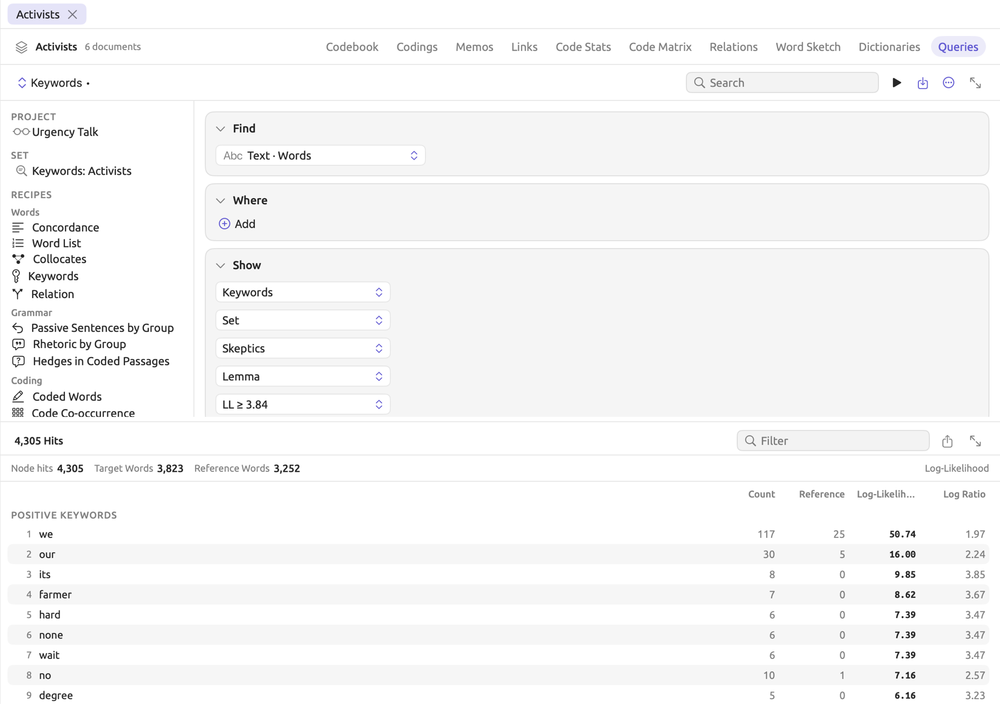
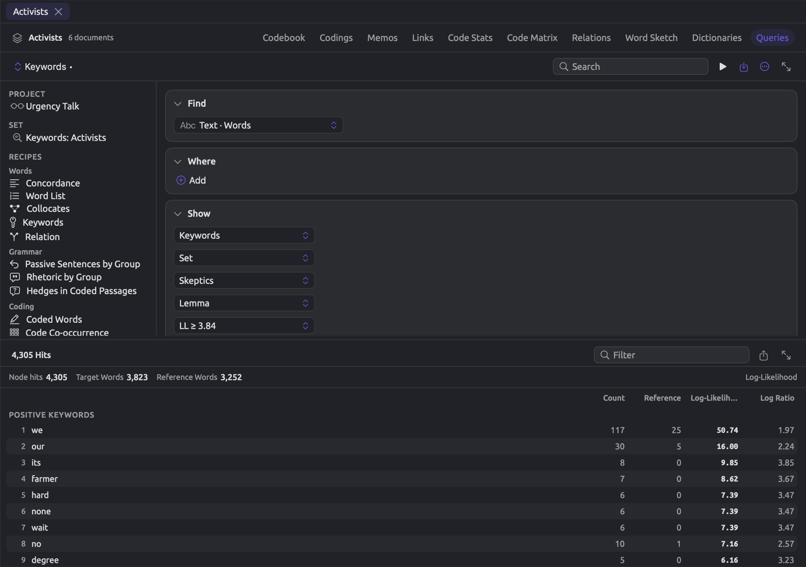
Leave the menu showing Lemma unchanged, so that cost and costs become cost. Leave the menu showing LL ≥ 3.84 unchanged. The abbreviation LL stands for the Log-Likelihood score. By chance alone, a score greater than or equal to 3.84 occurs only about once out of every twenty trials. Any word with a lower score is omitted from the result list.
The result will display underneath the builder, and is updated as you alter the parameters. On a larger project, run the query manually by clicking on the triangle icon above the builder, or pressing ⌘R.
Positive Keywords lists words used more frequently by the activists compared to the skeptics. Negative Keywords lists those used less frequently by them. In this comparison, “Activists” serves as the target, while “Skeptics” serves as the reference. The line above the tables tells you how many total words were considered in each set, respectively labeled Target Words and Reference Words. In the table, a word’s count in the “Activists” set appears in Count, whereas the same in the “Skeptics” set appears in Reference.
Both lists are ranked according to Log-Likelihood. Near the top of either list are words whose differences are least likely to be due purely to chance. Log Ratio indicates the degree of difference taking into consideration the overall sizes of the two sets. The value 1 indicates usage twice as often, 2 indicates four times, 3 eight times, and so forth, doubling with each further step. For negative keywords, the ratio falls below zero, indicating usage half as often at −1. Keywords in Chapter 16, Query Results and Statistics calculates both scores step by step.
Keyword lists reveal to you distinctive words; however, they tell you nothing about why they stand out. Analyze the contexts surrounding the listed words in passages.
To save the keyword query:
- In the bar above the builder, click the button with a square and an arrow pointing into it. Its tooltip reads Save.
- Choose Save.
- In the Save Query dialog, replace the text in Name with
Keywords: Activists. Leave Available In at Set. - Click Save.


The saved query will appear under Set at the top of the left column whenever you access the queries in the “Activists” set. Clicking on this item restores the keyword list that you saw earlier. In the example project, there is already a saved query here.
Export a table
Keyword lists may be exported as comma-separated values (.csv) files for use with spreadsheet applications.
- In the bar above the results, click the export button, a square with an arrow pointing up. Its tooltip reads Export.
- Choose CSV.
- Choose a folder and click Save.

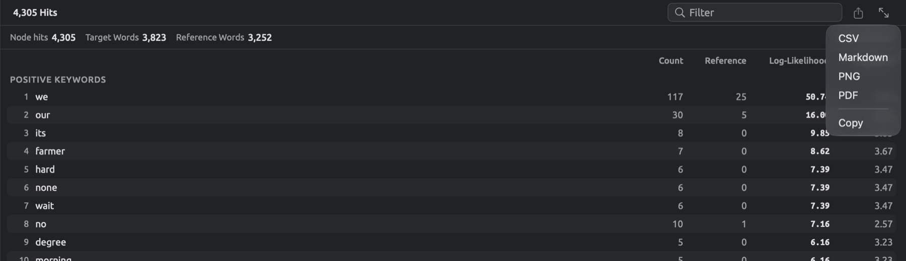
Each line contains a keyword paired alongside its counts, scores, and whether it was marked positive or negative. The format here is Comma-Separated Values (CSV), a simple text-based spreadsheet format which many applications including spreadsheets and statistical software packages support. The other items under Export in this same menu export results as images (PNG and PDF), Markdown files (Markdown format combines the results file with metadata regarding the query used), or copy the result to your clipboard (Copy).
Most table and graph displays offer an export option, just as this one does. Exporting tables and charts in Chapter 22, Exchanging and Exporting provides greater detail on what each export menu does, along with where it appears.
To review concordances for any particular keyword, click Concordance below Recipes in the left column. The concordance feature allows you to explore each instance of the word along with its immediate context within the surrounding text. This topic is discussed further in Concordance in Chapter 16, Query Results and Statistics; Recipes in Chapter 17, Query Patterns and Discovery explains how to choose the word.
Where to go next
Help ▸ Glossary opens a glossary window with short explanations for LemmaLoom terminology. You may leave it up while working with your documents for quick referencing of any abbreviations or technical terms you might not know.
| To | Read |
|---|---|
| Learn every part of the window, and where your work is kept | Getting Started |
| Import PDF files, web pages, and recordings | Importing Material |
| Find, select, and edit text in the reader | Reading and Editing |
| See what each lens annotates | Lenses |
| Write memos, link passages, and code automatically | Coding |
| Divide a project by stance, outlet, or date | Sets, Groups, Tags, and Attributes |
| Translate a text and read it beside the original | Translations and Split View |
| Count, chart, and test your codes | Analyzing Codes |
| Study the grammatical partners of a word | Word Sketch and Sketch Space |
| Search for words, phrases, and grammatical patterns | Building a Query and Query Patterns and Discovery |
| Understand a score or a test before you report it | Query Results and Statistics and Statistics at a Glance |
| Analyze material across several projects | Working across projects in Chapter 3, Projects and Documents |
| Keep lists of words, such as hedges, and count them | Dictionaries |
| Share a project or move it to another Mac | Exchanging and Exporting |
| Find a keyboard shortcut | Keyboard Shortcuts |